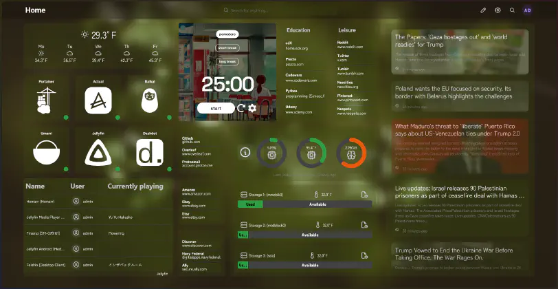

Homarr and Other Self-hosted Dashboards
January 20, 2025
This post was originally part of a different post (yet to be published), but it’s gotten so unwieldy and long that I’ve decided to chop it up into smaller posts. Basically, I’ve recently started setting up a home server with an Orange Pi Zero 3 to host a few applications with Docker. I decided to look into dashboard applications, and after a bit of trial-and-error and lucky timing, landed on Homarr. This post is just me showing off my Homarr setup (with details on how to recreate it) and briefly reviewing other options currently available.
My use case was a little bit different from what a lot of server dashboards try to be–I wanted standard dashboard functionality, but I also wanted a drop-in replacement for my internet startpage. I’ve been using start.me for the last few years, which works nicely, but I’d prefer something that’s all-in-one. This meant I needed a server dashboard that also supported RSS feed aggregation (for news feeds), widgets, and groupable bookmarks. The more customizable, the better.
The long and short of it is that Homarr suits my specific needs best, although Dashy sounds just as good on paper. I actually almost moved on from Homarr because it was pretty clunky, but the next day I saw they were starting up a beta that would address some of the issues I was having. I switched over to the beta and really enjoyed it. As of just a few days ago, Homarr officially rolled this version out as a stable release. It’s really a lot better, although it has a few idiosyncracies that I thought would be useful to document here.
Before we get to that though, here’s a look at my Homarr setup:
{kind=link}
I won’t go over all of the installation instructions here. You can find step-by-step instructions on installing Homarr with Docker Compose on Homarr's website.
A few random notes about Homarr that might be useful to someone testing it out:
- If you want to add bookmarks, you’ll have to add them as apps. Creating apps isn’t a very straightforward process, but you can add /manage/apps to your URL to jump straight to the apps list. Here, you can add new ones. Apps can be implemented as either, well…apps, or bookmark links.
- You may notice that you can customize the icons. If you’re using Simple Icons, you can add a hex code to the end of the link to change the SVG color. And as of the new release, you can upload your own icons super simply. I couldn’t find an all white version for Dashdot or Baikal, so I made white SVGs in Illustrator and used the Dropbox URL until this update allowed me to upload them directly. Here are the Baikal and Dashdot SVGs, in case anyone needs them.
- The iframes is a pretty cool feature! I chose this Pomodoro timer (I use a different background for each workspace in Zen browser), but you could get creative and try out lots of things. I’d recommend looking into Notion embeds for inspiration. They might not all work 1:1, but it’s worth checking out. I think I might try out the virtual cafe as an iframe next.
- This is more of an edge case thing, but if you use Zen Browser, set Homarr to your new tab page, and notice your bookmarks not loading when you swap to different workspaces, make sure you actually log in. This should fix it.
- From what I can tell, Homarr is not mobile friendly. Not sure if I’m just missing a setting, but I couldn’t figure out a way to make it look nice. Maybe that’s coming in a future update.
- I found the “Dynamic category” feature very buggy and unstable. I didn’t really need it for my setup, so this wasn’t a big deal for me, but if it matters to you, just know it’s not really useable yet.
- If you attempt to modify your Homarr CSS, be sure to use the semantic Mantime class names instead of the names it automatically generates. You can find them with the developer tools. There isn’t great documentation as to what each class name represents, and if I ever get to customizing Homarr some more, I might try my hand at it.
{kind=link}
{kind=link}
I used this Unsplash photo as my background and matched my Zen browser gradient to it, then customized my Homarr CSS to look how I wanted it to. Here’s my CSS:
A few warnings about my CSS:
- It’s not perfect. Dialog modals inherit translucence and I haven’t figured out how to make them more opaque/legible yet.
- The RGB colors are set to a palette that matches my background image and the hex codes I set in my Homarr colors settings (a primary color of #1c5e28 and a secondary color of #d6d385.)
- Some of the gray font is a little hard to read. I haven’t figured out which class to target yet. Maybe some other time.
And that’s all there really is to it. I’m happy with Homarr. The drag and drop functionality is nice, it’s flexible without being overwhelming, and despite its quirks, it’s perfect for what I need. I’m satisfied with my layout for now, but I can already think of a lot of different iterations that’d look nice and fit different themes.
But just for posterity, let’s go over Homarr’s competition. If you think a self-hosted dashboard sounds neat, but you’re not impressed with what Homarr has to offer, perhaps one of these would be a better fit. Here were my (super subjective) impressions:
- Homepage: Gorgeous. I wanted this to work out so badly, especially because it’s so popular. But the lack of native RSS feeds is a deal breaker for me, and I also found some of the grid behavior a little frustrating. I know you can set up a custom API widget, but I couldn’t get this to work. Probably user error, but still. You have to edit a config file to get everything working, which was not a big deal for me, but be aware there isn’t a WSIWYG editor.
- Heimdall: Another popular option, but it didn’t resonate with me and wasn’t feature-rich enough to support my use case. This is good as a no-frills server dashboard.
- Dashy: It’s extremely popular, and it’s quite customizable. I like how browser bookmarks are handled. It also supports RSS feeds, which is great. Performs build during each startup, which has led to complaints of server performance. But there are lots of nice Dashy setups; it seems well-suited to power users.
- Flame: If I just wanted bookmarks and links, I think I’d choose Flame. It’s so sleek and minimal. I love the look of the weather widget. It’s also uncluttered and easy to find what you need.
- Homer: Another popular dashboard choice. The aesthetics weren’t to my personal tastes, but it looks quite polished and functional. It seems to have decent community support as well.
I know this post is a little more niche than what I usually post about, but self-hosting is really fun and not prohibitively difficult, so I hope it becomes a more popular project. I’ll elaborate on specific steps I took and ways to test out Docker applications even without dedicated hardware (hint: WSL 2) in the home server master post.
If you self-host, do you use any of these dashboards? If you don’t, would you?